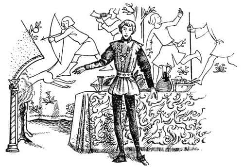
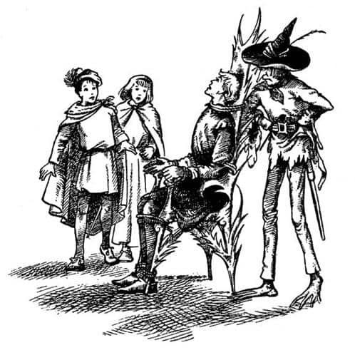

Karanlık Kalede
Güvercin turtası, soğuk jambon, salata ve çöreklerden oluşan mönü getirilip, hepsi sandalyelerini masaya yanaştırarak yemeye başladıklarında şövalye anlatmaya devam etti:
“Dostlarım, şunu anlamalısınız ki, kim olduğum ve bu karanlık dünyaya ne zaman geldiğim hakkında hiçbir şey bilmiyorum. Tanrıçalık dışında bütün güzel özelliklere sahip olabilecek bu Kraliçe’nin sarayında yaşamaya başladığım andan öncesini hatırlamıyorum; onun beni şeytani bir büyüden kurtarıp aşırı cömertliğinden dolayı buraya getirdiğini düşünüyorum. Bu arada, kurbağa ayaklı, bardağın boşalmış. Çekinme, doldur doldur iç. Bu bana doğru görünüyor, çünkü şimdi bile sadece Kraliçemin üstesinden gelebileceği bir büyü altındayım. Her gece aklımın ve daha sonra da vücudumun korkunç bir şekilde değiştiği bir saat gelir. İlk önce çok öfkelenirim ve bağlanmazsam, en yakın arkadaşlarımı bile öldürmeye kalkarım. Çok kısa bir süre sonra da aç, vahşi ve öldürücü, büyük bir yılana dönüşürüm. Beyefendi, lütfen bir güvercin göğsü daha alın, yalvarırım. Evet, işte bunları anlatıyorlar ve kesinlikle gerçeği söylüyorlar, çünkü kraliçem aynı fikirde. Ben hiçbir şey hatırlamıyorum, çünkü o saat geçtiğinde tüm o krizi unutmuş olarak – yorgunluğum hariç, o da fazla değil – uyanıyorum. Küçük hanım, dünyanın güneyindeki barbar bir ülkeden benim için getirilen şu ballı çöreklerden birini ye. Ne diyordum? Ancak Saygıdeğer Kraliçe, sanatı sayesinde beni yerüstündeki bir ülkeye kral yapıp tacı başıma koyduğunda benim bu büyüden kurtulacağımı biliyor. Ülke ve bizim çıkış yerimiz şimdiden seçildi. Kraliçe’nin Toprak İnsanları gece gündüz çalışarak o ülkenin altına bir tünel kazdı, o kadar ileri gittiler ki o ülkede yaşayanların yürüdükleri çimlerin altında çentik atacak yer yok. Artık yukarı ülkedekilerin yazgılarının gerçekleşmesi pek yakın. Kraliçe kazı yerinde ve ben oraya gitmek için haber bekliyorum. O zaman beni krallığımdan ayıran ince tavanı delerek çıkacağız ve onun rehberliği ve arkamdaki bin Toprak İnsan’la, atımın üzerinde ilerleyerek düşmanların üzerine aniden çökeceğim, şeflerini öldürecek, güçlü kalelerini ele geçirecek ve yirmi dört saat içinde kralları olacağım.”
“Onların durumları biraz kötü değil mi?” dedi Scrubb.
“Senin kafan mükemmel çalışıyor!” diye bağırdı Şövalye. “Çünkü şerefim üzerine yemin ederim bunu daha önce hiç böyle düşünmemiştim. Ne demek istediğini anlıyorum.” Bir an için bir şeyden azıcık, ama çok azıcık rahatsız olmuş gibi göründü, ama çok geçmeden yüzü aydınlandı ve o bildik kahkahalarından birini patlattı. “Ne yazık! Hepsi kendi işleriyle uğraşırken, tabanlarının altında, sadece bir fersah aşağıda büyük bir ordunun bir pınar gibi üzerlerine çağlamaya hazır olduğunu bilmemeleri dünyanın en komik, en tuhaf şeyi, değil mi? Hele hiç kuşkulanmamaları! Yenilgilerinin acısı sona erdiğinde onlar bile gülmekten başka bir şey düşünemezler!”
“Bunun komik olduğunu hiç sanmıyorum” dedi Jill. “Senin kötü ve zorba bir hükümdar olacağını düşünüyorum.”
“Ne?” dedi Şövalye hâlâ gülerek ve Jill’in başını çileden çıkartıcı bir biçimde okşayarak. “Küçük hanımımız iyi niyetli bir politikacı mı? Hiç korkma tatlım. O ülkeye hükmederken her şeyi Kraliçem olacak bayanın öğütleriyle yapacağım. Benim sözüm fethettiğimiz ülkenin kanunu olacağı gibi, onun sözü de benim kanunum olacak.”
“Benim geldiğim yerlerde” dedi her geçen dakika ona olan öfkesi artan Jill, “karıları tarafından yönetilen adamların pek değeri yoktur.”
“Bir kocan olduğunda garanti ederim fikrini değiştirirsin” dedi şövalye bunun komik olduğunu düşünerek. “Hanımımla aramda yaşanacaklar değişik bir durumdur. Beni şimdiden binlerce tehlikeden kurtaran Kraliçemin sözlerine uyarak yaşamak beni hoşnut eder. Hiçbir ana çocuğuna, ekselansları Kraliçe’nin bana davrandığından daha şefkatli davranmamıştır. Bakın, onca işi ve derdi arasında, gözlerim gün ışığına alışsın diye beni sık sık yukarı dünyada atla gezintiye çıkardı. Bu gezilerde tam teçhizat olmam, yüzümü görmesinler diye siperliğimi indirmiş olmam ve kimseyle konuşmamam gerekiyor. Çünkü eğer bunu yapmazsam, üzerimdeki korkunç büyüden asla kurtulamayacağımı öğrenmiş. Bu, tapınılası bir kadın değil de nedir?”
“Gerçekten çok iyi bir bayan gibi görünüyor” dedi Suratsız, tam tersini ima eden bir sesle.
Daha yemekleri bitmemişti, ama Şövalye’nin konuşmalarından bıkmışlardı. Suratsız, “O cadı bu genç aptalla ne gibi bir oyun oynuyor acaba?” diye; Scrubb, “Gerçekten koca bir bebek, o kadın şövalyenin dizginlerini elinde tutuyor, avanağın teki” diye ve Jill, “Uzun süreden beri rastladığım en gülünç, en kendini beğenmiş adam, bencil domuzun biri” diye düşünüyordu. Yemek bittiğinde Şövalye’nin tavırları değişti. Artık gülmüyordu.

“Dostlarım” dedi, “saatim yaklaştı. Beni görmenizden utanıyorum, ama yalnız kalmaktan da korkuyorum. Az sonra gelip şuradaki sandalyeye elimi ayağımı bağlayacaklar. Ne yazık ki böyle yapmak zorundayız: Çünkü söylediklerine göre böyle yapmazsak, öfkem yüzünden karşıma çıkan her şeyi mahvedermişim.”
“Bana bak” dedi Scrubb, “etkisinde olduğun büyüden dolayı çok üzgünüm, ama seni bağlamaya gelenler bize ne yapacak? Bizi hapishaneye koymaktan söz ediyorlardı. O karanlık yerleri pek sevmiyoruz. İzninle, sen iyileşinceye kadar burada kalmayı tercih ederiz.”
“İyi fikir” dedi Şövalye. “Ama geleneklere göre benim şeytani saatimde Kraliçe’den başka kimse benimle olamaz. Benim şerefimi düşünür, o çılgınlıkta söylediğim kelimelerin kendi kulaklarından başka kulağa acı vermesini istemez. Ben görevli cüceleri sizin burada kalmanız için ikna edemem. Sanırım ayak seslerini duyuyorum. Şuradaki kapıdan girin. Benim daireme gider. Ya orada benim gelişimi bekleyin ya da isterseniz buraya dönüp ben çılgınca bağırırken yanımda oturun.”
Tarif edilen yere giderek daha önce görmedikleri bir kapıdan geçip odayı terk ettiler. Bu onları karanlığa değil, hoşlarına giden, aydınlık bir koridora çıkarmıştı. Çeşitli kapıları deneyip yıkanmak için su ve üstüne üstlük bir de ayna buldular. “Yemekten önce banyo yapmamızı teklif etmedi” dedi Jill, yüzünü kurularken. “Bencil, bencil domuz.”
“Büyüyü seyredecek miyiz, yoksa burada mı kalacağız?” dedi Scrubb.
“Ben burada kalalım derim” dedi Jill. “Görmemeyi tercih ederim.” Böyle söylemesine rağmen aslında merak ediyordu.
“Hayır, geri gidelim” dedi Suratsız. “Biraz bilgi toplayabiliriz, her türlü bilgiye ihtiyacımız var. O Kraliçe’nin bir cadı ve düşman olduğundan eminim. O Toprak İnsanlar bizi görür görmez kafamıza vuracaklardır. Bu ülkede daha önce sezdiğimden daha güçlü bir tehlike seziyorum, yalan ve ihanet kokusu alıyorum. Gözlerimizi dört açmalıyız.”
Koridordan geri döndüler, yavaşça kapıyı açtılar. “Her şey yolunda” dedi Scrubb, etrafta Toprak İnsan olmadığını kastederek. Sonra yemek yedikleri odaya girdiler. Ana kapı kapanmıştı, ilk geldiklerinde arasından geçerek odaya girdikleri perdeler arkalarında kalmıştı. Şövalye, topuklarından, dizlerinden, dirseklerinden, bileklerinden ve belinden garip bir gümüş sandalyeye bağlanmıştı. Alnında ter damlaları birikmişti ve yüzü acıyla doluydu.
“Gelin dostlarım” dedi, çabucak onlara bir göz atarak. “Kriz henüz gelmedi. Hiç ses çıkarmayın, çünkü hizmetçiye yattığınızı söyledim. Şimdi… geldiğini hissediyorum. Çabuk! Kendi kendimin efendisiyken beni dinleyin! Kriz geldiğinde yakarış ve tehditlerle bağlarımı çözmeniz için size yalvarıp, dilenebilirim. Öyle yaptığımı söylüyorlar. En çok sevdiğiniz, en çok korktuğunuz şeyleri kullanarak yalvarabilirim. Beni dinlemeyin. Kalpleriniz taş, kulaklarınız sağır olsun. Çünkü bağlı olduğum sürece emniyettesiniz. Fakat bu sandalyeden kalkarsam, o zaman ilk önce gazabım sonra da” burada ürperdi, “iğrenç bir yılana dönüşümüm gerçekleşir.”
“Seni serbest bırakmayacağız, korkma” dedi Suratsız. “Ne vahşi insanlar ne de yılanlarla karşılaşmak isteriz.”
“Umarız karşılaşmayız” dedi Srubb ve Jill beraberce.
“Bununla beraber” diye ekledi Suratsız fısıldayarak. “Kendimizden fazla emin olmayalım. Tetikte olalım. Birçok şeyi yüzümüze gözümüze bulaştırdık, biliyorsunuz. Bir başladı mı kurnazlık yapacağından hiç kuşkum yok. Birbirimize güvenebilir miyiz? Ne söylerse söylesin, bu iplere dokunmayacağımıza dair hepimiz söz verebilir miyiz? Anladınız mı, ne söylerse söylesin!”
“Sözüm söz!” dedi Scrubb.
“Yapacağı ya da söyleyeceği hiçbir şey fikrimi değiştirmeyecek” dedi Jill.
“Şşşş! Bir şeyler oluyor” dedi Suratsız.
Şövalye inliyordu. Yüzü kireç gibi bembeyazdı, bağlarının içinde kıvranıyordu. Ya haline üzüldüğünden ya da başka bir nedenle, Jill onun öncekinden daha iyi bir adam olduğunu düşünüyordu.
“Ah” diye inledi Şövalye. “Büyüler, büyüler, şeytani büyülerin ağır, karmaşık, soğuk ve yapışkan ağları. Diri diri gömülmüş. Yerin altına, aşağıya isli karanlıklara çekileli kaç sene olmuş? Bu kuyuda on yıl mı yoksa bin yıl mı yaşadım? Çevremde solucan adamlar. Ah, acıyın bana. Bırakın beni, bırakın geri gideyim. Rüzgârı hissedip, mavi gökleri göreyim… Küçük bir havuz vardı. İçine baktığımda tüm ağaçların, yemyeşil suda baş aşağı büyüdüğünü görebiliyordum ve onların altında derinlerde, çok derinlerde mavi bir gökyüzü—”
O ana kadar alçak bir sesle konuşuyordu; şimdi gözlerini kaldırıp onlara dikti, berrak ve yüksek bir sesle:
“Çabuk! Şimdi aklım başımda. Her gece aklım başıma gelir. Bu büyülü sandalyeden kalkabilsem öyle kalacağım. Tekrar bir adam olacağım. Oysa beni her gece bağlıyorlar ve her gece bu fırsatı kaçırıyorum. Ama siz düşman değilsiniz. Ben sizin esiriniz değilim. Çabuk! İpleri kesin.”
“Kararınızdan caymayın! Sakin olun” dedi Suratsız iki çocuğa.
“Yalvarırım beni dinleyin” dedi Şövalye, sakin olmaya çalışarak. “Serbest kalırsam sizi öldürüp yılan olacağımı mı söylediler? Yüzlerinizdeki ifadeden öyle söylediklerini anlıyorum. Yalan bu! Benim bu saatte aklım başımda. Günün geri kalan bölümünde büyü altındayım. Siz Toprak İnsan ya da Cadı değilsiniz. Niçin onlardan yana olasınız? İncelik gösterin ve bağlarımı kesin.”
“Sakin olun! Sakin olun! Sakin olun!” dedi üç yolcu birbirine.
“Ah, sizler taş kalplisiniz” dedi Şövalye. “İnanın herhangi bir ölümlünün dayanabileceğinden fazlasını çekmiş bir biçareye bakıyorsunuz şu an. Beni böyle perişan eden düşmanlarımdan yana olmanız için size ne kötülük ettim ki? Dakikalar ilerliyor. Beni şimdi kurtarabilirsiniz; bu saat geçtiğinde tekrar aptallaşacağım. Bir oyuncak, bir fino köpeği, hayır daha kötüsü, insanlığın sonunu planlayan en şeytani büyücünün piyonu ve aleti olacağım. Tüm geceler arasından bu gece, o uzaktayken! Bir daha bulamayacağım bir fırsatı kaçırmama neden oluyorsunuz.”
“Bu çok korkunç. Keşke bitene kadar başka yerde kalsaydık” dedi Jill.
“Sakin ol” dedi Suratsız.
Tutsağın sesi artık bir çığlığa dönüşüyordu. “Bırakın beni diyorum. Kılıcımı verin. Kılıcımı! Serbest kaldığımda Toprak İnsanlar’dan öyle bir öç alacağım ki, yeraltında binlerce yıl bundan bahsedilecek!”
“Artık çılgınlaşmaya başlıyor” dedi Scrubb. “Umarım o düğümler sağlamdır.”
“Evet” dedi Suratsız. “Şimdi serbest kalsa doğal gücü iki misli olur. Ben kılıçta pek iyi değilim. İkimizin de hakkından gelirse şaşmam; sonra yılanla uğraşmak için Pole tek başına kalır.”
Bağlarını öyle zorluyordu ki ipler bilekleriyle ayaklarını kesiyordu. “Dikkat edin” dedi. “Dikkat edin. Bir gece ipleri kopardım. Ancak o zaman Cadı buradaydı. Bu gece size zarar veremez. Beni serbest bırakın, dost olalım. Yoksa can düşmanınız olurum.”
“Kurnaz, değil mi?” dedi Suratsız.
“İlk ve son olarak” dedi tutsak, “beni serbest bırakmanızı rica ediyorum. Tüm korkular ve aşklar, parlak gökyüzü ve büyük Aslan, Aslan’ın kendisi adına sizi suçluyorum—”
“Ah!” dedi üç yolcu sanki bir yerleri acımış gibi. “İşaret bu” dedi Suratsız. “İşaretin kelimeleriydi” dedi Scrubb daha temkinlice. “Ne yapacağız?” dedi Jill.
Bu korkunç bir soruydu. Sevdikleri bir ismi söyledi diye şövalyeyi serbest bırakacaklarsa, onu hiçbir şekilde serbest bırakmayacaklarına dair söz vermelerinin ne anlamı vardı ki? Öte yandan, itaat etmeyeceklerse işaretleri öğrenmenin yararı neydi? Peki Aslan, onun adına istendiğinde, çılgın birini çözmelerine gerçekten izin verir miydi? Kazara olmuş olabilir miydi? Ya, yeraltının kraliçesi tüm işaretleri biliyorsa ve onları tuzağa düşürmek için şövalyeye bu ismi öğrettiyse? Peki ya bu gerçek işaretse? Üçünü berbat etmişlerdi, son şanslarını da yüzlerine gözlerine bulaştırmaya cesaret edemezlerdi.
“Keşke bilebilseydik!” dedi Jill.
“Sanırım biliyoruz” dedi Suratsız.
“Onun bağlarını çözersek her şeyin yoluna gireceğini mi söylemeye çalışıyorsun?” dedi Scrubb.
“Onu bilemem” dedi Suratsız. “Görüyorsun ki Aslan Pole’a ne olacağını değil, ne yapması gerektiğini söyledi. Bu adamı çözmenin ölüm fermanımızı imzalamak olduğundan eminim. Ama bu, işarete uymamızı engellemez.”

Hepsi ayakta durarak parlak gözlerle birbirlerine baktı. İç bulandırıcı bir andı. “Tamam!” dedi Jill aniden. “Bir an önce bitirelim şu işi. Hepinize elveda!..” Hepsi el sıkıştılar. Şövalye artık çığlıklar atıyordu; yanakları köpüklerle kaplıydı.
“Haydi Scrubb” dedi Suratsız. İkisi de kılıçlarını çekip tutsağın yanına gittiler.
“Aslan adına” diyerek ipleri kesmeye başladılar. Tutsak serbest kalır kalmaz tek atlayışla odayı boydan boya geçti, kılıcını kavradı (ondan alınıp masanın üzerine konulmuştu), kınından çıkardı.
“Önce sen!” diye bağırarak gümüş sandalyeye saldırdı. Gümüş, kılıç darbeleriyle bir ip gibi parçalanıyordu ve birkaç dakika sonra sandalyeden geriye sadece eğri büğrü parçalar kalmıştı. Sandalye parçalanırken parlak bir ışık yayıp, hafif bir gökgürültüsüne benzer bir ses ve (bir an için) iğrenç bir koku çıkardı.
“Geber, iğrenç büyücülük makinesi” dedi, “sahiben seni bir başka kurban için kullanamasın.” Sonra dönüp kurtarıcılarına baktı, yüzündeki o sahte ifade kayıplara karışmıştı.
“Ne?” diye bağırdı Suratsız’a dönerek. “Önümde bir Kıllıkıpırdak mı görüyorum; gerçek, canlı, dürüst, Narnialı bir Kıllıkıpırdak, ha?”
“Oh, her şeye rağmen Narnia’yı duymuşsun” dedi Jill.
“Büyü altındayken unutmuş muydum?” diye sordu Şövalye. “Pekâlâ, bu ve diğer çileler sona erdi artık. Narnia’yı bildiğime inanabilirsiniz, çünkü ben Narnia Prensi Rilian’ım ve Yüce Kral Caspian babamdır.”
“Soylu Ekselansları” dedi Suratsız diz çökerek (çocuklar da aynı şeyi yaptı), “buraya gelmekte sizi aramaktan başka bir amacımız yoktu.”
“Benim diğer kurtarıcılarım, sizler kimsiniz?” dedi Prens, Scrubb ve Jill’e.
“Biz Dünyanın Sonu’nun ötesinden, siz Ekselanslarını aramak üzere Aslan tarafından gönderildik” dedi Scrubb. “Ben onunla Ramandu’nun adasına giden Eustace’im.”
“Size olan borcumu asla ödeyemem” dedi Prens Rilian. “Peki babam? Hâlâ yaşıyor mu?”
“Biz Narnia’yı terk etmeden önce doğuya yelken açtı, Lordum” dedi Suratsız. Ne var ki, Ekselansları Kral’ın çok yaşlı olduğunu unutmamalı. Bire on bahse girerim, kral bu yolculukta ölür.”
“Yaşlı olduğunu söylüyorsun. Peki ben ne zamandır cadının büyüsü altındayım?”
“Ekselansları Narnia’nın kuzeyindeki ormanlarda kaybolduğundan beri on yıldan fazla oldu.”
“On yıl!” dedi Prens sanki geçmişi silmek istermiş gibi eliyle yüzünü silerek. “Evet, size inanıyorum. Büyü altındayken gerçek kimliğimi hatırlayamıyordum, ama artık kendime geldiğim için o büyülü yaşamı hatırlıyorum. Şimdi dostlarım, durun! Ayak sesleri duyuyorum. O ayak sesleri midenizi bulandırmıyor mu? Kapıyı kilitle. Yok dur. Daha iyi bir fikrim var. Aslan yardım ederse bu Toprak İnsanları kandıracağım.” Kararlılıkla kapıya yürüdü ve kapıyı ardına kadar açtı.